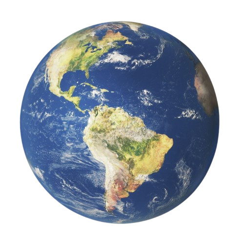

Plataforma Interativa de Análise de Risco
Uma ferramenta de código aberto para visualizar a suscetibilidade geológica a escorregamentos e apoiar a tomada de decisão no planejamento territorial, desenvolvida no âmbito de Iniciação Científica Voluntária da UNIFESP.

Como usar a plataforma
Escolha uma aba no menu superior. Em todos os mapas é possível trocar o mapa de fundo no canto superior direito e clicar em uma área para ver seus detalhes.
Nossa Equipe
Prof. Dr Adilson Viana Soares Junior
Orientador
Professor adjunto da Universidade Federal de São Paulo. Tem experiência na área de Geociências, com ênfase em Geotectônica, atuando principalmente nos seguintes temas: Evolução geológica de riftesmesozóicos, Influência do embasamento na instalação dos riftesmesozóicos, Evolução da paisagem, Paleogeografia e Neotectônica na Região Amazônica. Possui graduação em Geologia pela Universidade Federal do Pará (1999), Mestrado em Geologia e Geoquímica pela Universidade Federal do Pará (2002) e Doutorado em Geologia e Geoquímica pela Universidade Federal do Pará (2007). Desenvolve projeto de Pós-Doutorado na UNESP - Rio Claro. Currículo Lattes: http://lattes.cnpq.br/6695778138601225.
Millena de Castro Sousa
Aluna de Iniciação Ciêntifica
Texto de trajetória
Prof. Dr. Angelo Cezar Borges de Carvalho
Co-orientador
Doutor (2022) e Mestre (2018) em Geociências (Geoquímica) pela Universidade Federal Fluminense e Tecnólogo em Saneamento Ambiental (2015) pelo Instituto Federal de Sergipe. Professor Assistente do Departamento de Ciências Ambientais da Universidade Federal de São Paulo (UNIFESP). Atua pesquisando na área de Geoquímica da Contaminação (Orgânica e Inorgânica) e Modelagem de Processos Ambientais.